Ubuntu+Docker+Ollama本地部署DeepSeek的一种方案
[TOC]
前言：
本文的实践案例主要针对 Windows 系统作为宿主机，基于 Windows 虚拟化技术 WSL2 部署 docker 服务和 Ubuntu 子系统的场景，其中 docker 服务与 Ubuntu 子系统均隶属于宿主机的 Windows 系统。Ubuntu 子系统可使用 docker 服务管理容器，但不可以管理 docker 服务本身。
如需使用 Linux 系统作为宿主机，并且通过 docker 服务部署，则简单很多，可直接参考章节七、八、九。
一、开启 Hyper -V
打开控制面板 → 程序和功能 → 启用或关闭 Windows 功能，勾选以下功能：
- Hyper -V
- 适用于 Linux 的 Windows 子系统
- 虚拟机平台
如图：
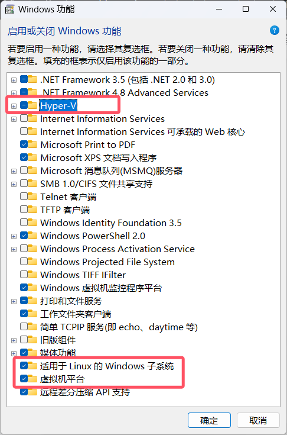
确定并重启电脑。
二、安装 WSL2
- 确认系统版本为 Windows 10 版本 2004 及更高版本（内部版本 19041 及更高版本）或 Windows 11；
- 确认 WSL 版本；
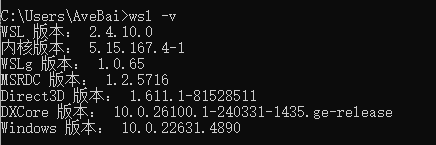
若 WSL 版本小于 2，则更新版本；
1
wsl --update
设置默认的 WSL 版本。
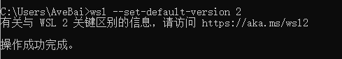
三、安装 Ubuntu 子系统
- 打开 Microsoft Store，搜索 Ubuntu，选择 Ubuntu 22.04.5 LTS 并获取，等待下载完成；
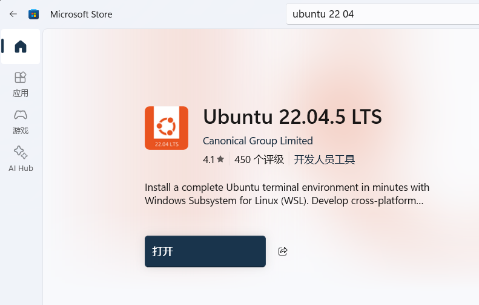
- 在开始菜单中找到 Ubuntu 并打开；
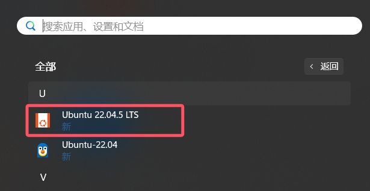
- 按照指示输入用户名和密码即可。
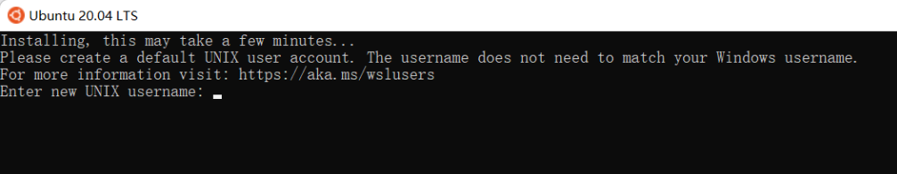
四、安装 Docker-Desktop
Docker Desktop，下载 Docker Desktop Installer.exe 文件；
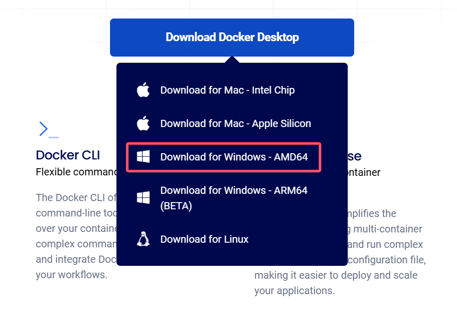
如果直接运行 Docker Desktop Installer.exe 文件将默认安装到 C 盘，需要使用参数
--installation-dir指定安装位置，打开 Windows 命令行，执行以下命令：1
start /w "" "Docker Desktop Installer.exe" install --installation-dir=F:\docker-desktop
按照默认配置安装，等待安装完成，点击 【Close and restart】重启电脑 ;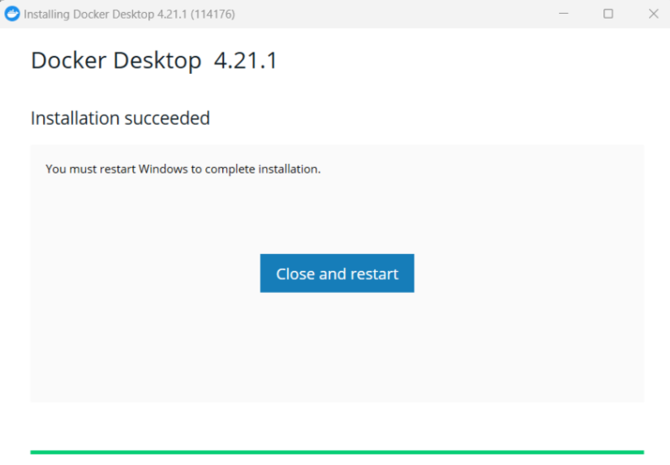
打开 windows 命令行验证：
1
docker --version
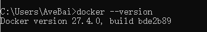
五、配置 Docker-Desktop
确认已使用 WSL2；
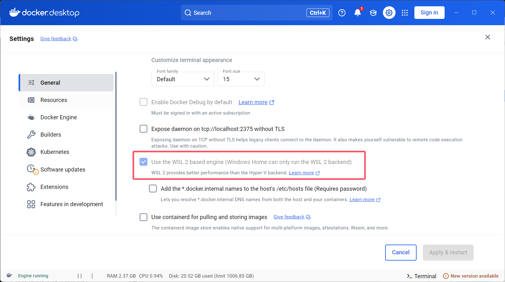
修改镜像默认保存位置；
先删除默认路径
C:\Users\你的用户名\AppData\Local\Docker\wsl，然后更改默认路径：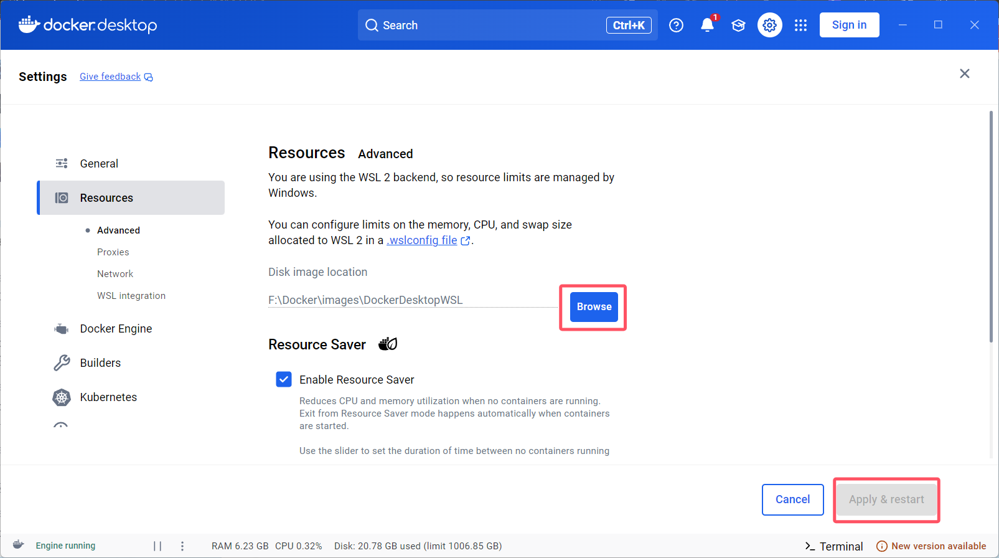
关联 Ubuntu 和 Docker ；
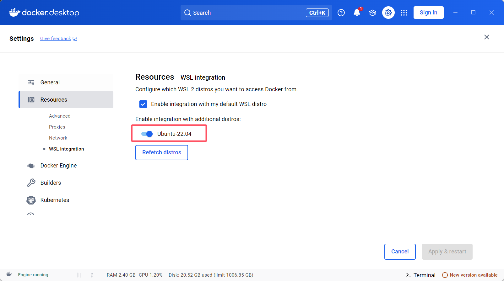
使用 https://cr.console.aliyun.com/cn-hangzhou/instances/mirrors 注册自己的加速地址；
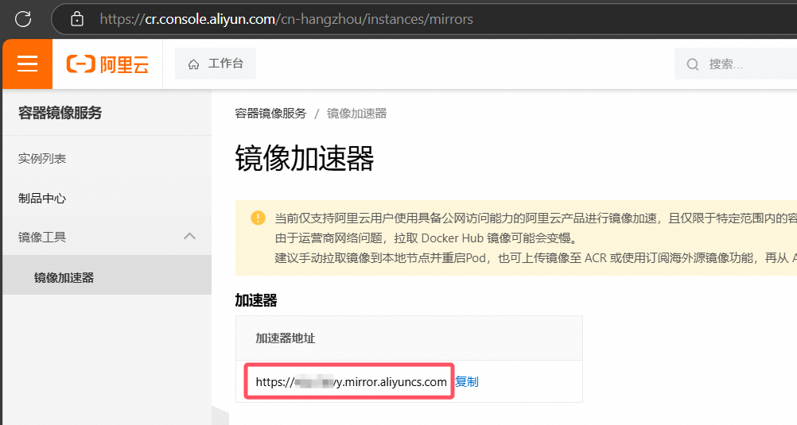
配置镜像源，
registry-mirrors中添加镜像加速器，然后重启 docker-desktop；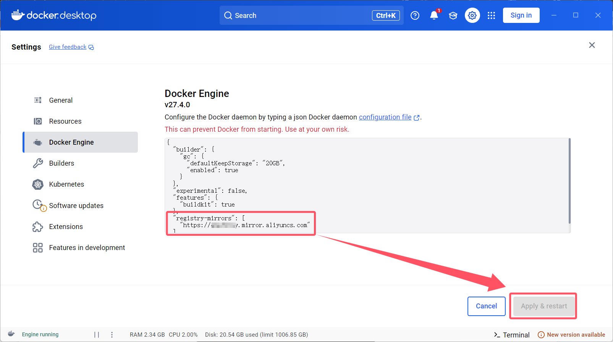
保险起见，
registry-mirrors中可以添加多个国内镜像源。验证镜像源，打开 docker-desktop 右下角的 Terminal，执行以下命令：
1
2
3docker info
docker pull ngnix
镜像拉取成功
六、迁移 Ubuntu & Docker-Desktop 的硬盘文件
为避免大量数据写入 C 盘，打开 Windows 命令行，执行以下操作。
1. 迁移 Ubuntu
- 列出已安装的虚拟子系统；
1 | wsl -l -v |
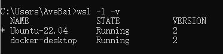
- 如果 STATE 为 RUNNING，则需要先停止；
1 | wsl --shutdown |
- 将 Ubuntu 导出为 tar 文件；
1 | wsl --export Ubuntu-22.04 F:\Ubuntu-22.04.tar |
- 注销并卸载 Ubuntu;
1 | wsl --unregister Ubuntu-22.04 |
- 将 Ubuntu 导入到新位置；
1 | wsl --import Ubuntu名称 Ubuntu的新路径 Ubuntu的tar文件路径 |
- 更改 Ubuntu 默认用户；
1 | 注意这里Ubuntu-22.04要写成Ubuntu2204 |
- 最终检查，指定安装的新位置下有
.vhdx文件，说明 Ubuntu 迁移成功。
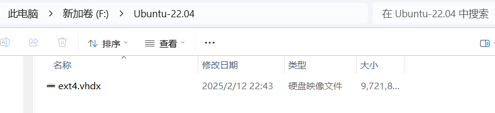
2. 迁移 Docker-Desktop
- 列出已安装的虚拟子系统；
1 | wsl -l -v |
- 如果 STATE 为 RUNNING，则需要先停止；
1 | wsl --shutdown |
- 将 docker-desktop 导出为 tar 文件；
1 | wsl --export docker-desktop F:\docker-desktop.tar |
- 注销并卸载 docker-desktop;
1 | wsl --unregister docker-desktop |
- 将 docker-desktop 导入到新位置；
1 | wsl --import Ubuntu-22.04 F:\docker-desktop F:\docker-desktop.tar |
- 最终检查，指定安装的新位置下有
.vhdx文件，说明 docker-desktop 迁移成功。
七、安装 NVIDIA 驱动
1. 安装 CUDA
一般自用电脑已经有显卡驱动，Windows 和 Ubuntu 命令行均可用以下命令验证：
1 | nvidia-smi |
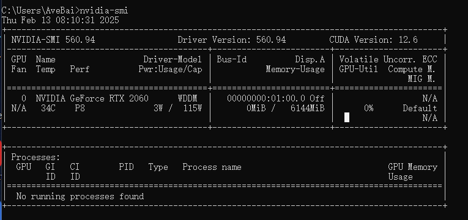
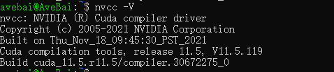
如果验证失败，请搜索相关攻略安装 CUDA。
2. 安装 nvidia-container-toolkit
WSL2 能与 Windows 共享 NVIDIA 驱动，但不包含容器工具包 nvidia-container-toolkit，可使用 Apt 安装。
打开 Ubuntu 命令行，依次执行以下命令：
1 | curl -fsSL https://nvidia.github.io/libnvidia-container/gpgkey | sudo gpg --dearmor -o /usr/share/keyrings/nvidia-container-toolkit-keyring.gpg \ |
1 | sudo sed -i -e '/experimental/ s/^#//g' /etc/apt/sources.list.d/nvidia-container-toolkit.list |
1 | sudo apt-get update |
1 | sudo apt-get install -y nvidia-container-toolkit |
执行结果如图：
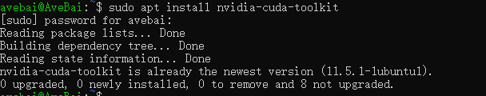
验证版本：
1 | dpkg -l | grep nvidia-container-toolkit |
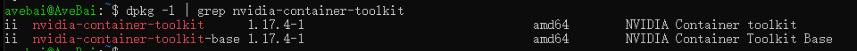
八、安装 Ollama
打开 Ubuntu 命令行，依次执行以下步骤：
验证 GPU 能否被正常调用；
1
docker run --gpus all nvcr.io/nvidia/k8s/cuda-sample:nbody nbody -gpu -benchmark
在 docker-desktop 中查看该容器的日志，日志中包含 CUDA 相关内容，证明 docker 容器能使用 GPU。
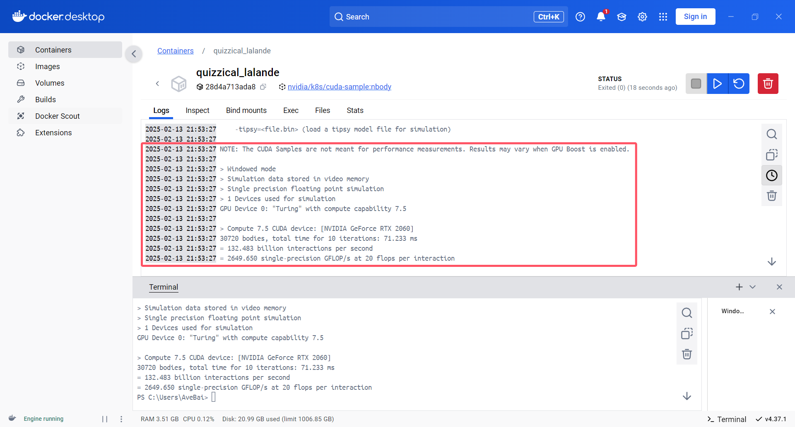
启动 Ollama 容器，执行以下命令之一；
1
2
3
4对于NVIDIA GPU，可使用GPU加速运行
docker run -d --gpus=all -v ollama:/root/.ollama -p 11434:11434 --name ollama ollama/ollama
也可以只使用CPU
docker run -d -v ollama:/root/.ollama -p 11434:11434 --name ollama ollama/ollama在 Ollama 容器中拉取示例模型并与其对话验证；
1
docker exec -it ollama ollama run llama2
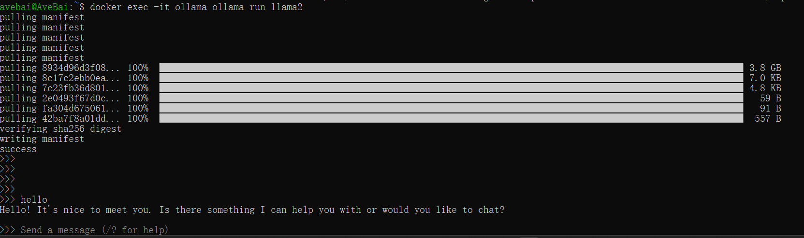
同上，可以部署 deepseek-r1 模型，请根据硬件配置选择参数量，具体配置要求可以询问官方 deepseek。
1
docker exec -it ollama run deepseek-r1:7b
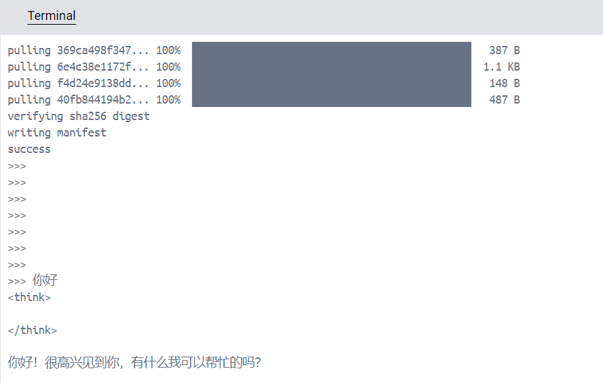
九、安装 Open WebUI
打开 Ubuntu 命令行，执行以下命令之一：
- 使用 GPU 加速；
1 | docker run -d -p 3000:8080 --gpus all --add-host=host.docker.internal:host-gateway -v open-webui:/app/backend/data --name open-webui --restart always ghcr.io/open-webui/open-webui:cuda |
- 不用 GPU 加速；
1 | docker run -d -p 3000:8080 --add-host=host.docker.internal:host-gateway -v open-webui:/app/backend/data --name open-webui --restart always ghcr.io/open-webui/open-webui:main |
使用浏览器访问：http://localhost:3000/ 。
首次登录需要注册账户，相关会话数据都会存储在本地数据库。
登录后选择模型就可以开始对话了！
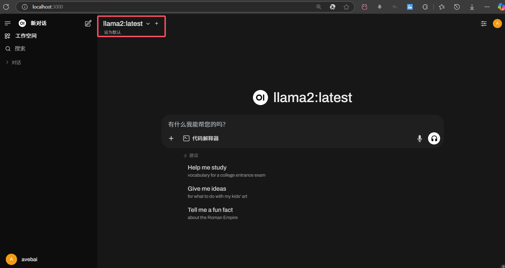
十、可能遇到的问题与可能的解决方法
1. Windows 功能列表中没有 Hyper-V
将以下命令复制到文本文档中，并将文档重命名为 Hyper.cmd:
1 | pushd "%~dp0" |
右键以管理员身份运行，等待执行完成，重启电脑即可。
如果无法解决，可能需要进入 BIOS 开启虚拟功能，具体细节请搜索相关攻略。
2. Windows 命令行执行 wsl --update 卡住
原因是 wsl --update 默认走微软服务器，网络连接不稳定，可以尝试在 wsl —update 后面加上 --web-download，此时网络就会走 github 服务器。
3. docker 拉镜像失败
如果报错为 Get "https://registry-1.docker.io/v2/": net/http: request canceled while waiting for connection (Client.Timeout exceeded while awaiting headers)，一般是因为在设置的镜像源中找不到所需的镜像转而使用默认的镜像源，需要在 registry-mirrors 中可以添加更多国内镜像源。
4. docker 拉取 open-webui 镜像太慢
1 | docker run -d -p 3000:8080 --gpus all --add-host=host.docker.internal:host-gateway -v open-webui:/app/backend/data --name open-webui --restart always ghcr.io/open-webui/open-webui:cuda |
可以尝试把 ghcr.io 改成 ghcr.nju.edu.cn。
5. 启动 open-webui 容器失败
如果报错为 (HTTP code 500) server error - Ports are not available: exposing port TCP 0.0.0.0:3000 -> 0.0.0.0:0: listen tcp 0.0.0.0:3000: bind: An attempt was made to access a socket in a way forbidden by its access permissions.，一般是因为 windows 随机保留部分 TCP 动态端口导致该端口不可用，我们可以重新设置 TCP 动态端口范围，以便 Hyper-V 只保留我们设置的范围内的端口。
可以使用 netsh int ipv4 show dynamicport tcp 命令查看tcp动态端口范围；
可以使用 netsh int ipv4 show excludedportrange protocol=tcp命令查看 tcp 端口排除范围；
执行以下命令设置动态端口范围：
1 | netsh int ipv4 set dynamic tcp start=49152 num=16384 |
然后重启电脑即可。